Brand Strategy · Visual Identity · Art Direction
Nazar
Be heard. Not just seen.
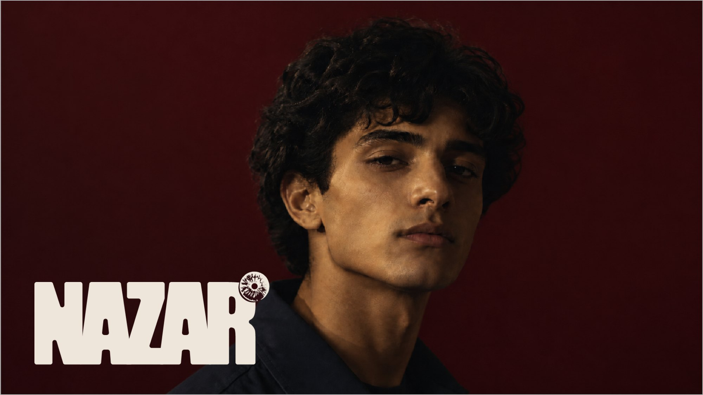
The brief
What I had to deliver
The brief explores a future where human attention becomes a scarce luxury, creating a brand that turns genuine, focused attention into something that can be reserved and exchanged.
How I read it
I explored attention through our need to be seen and validated, uncovering its darker psychology. The identity had to feel inviting yet subtly unsettling.
What I looked at first
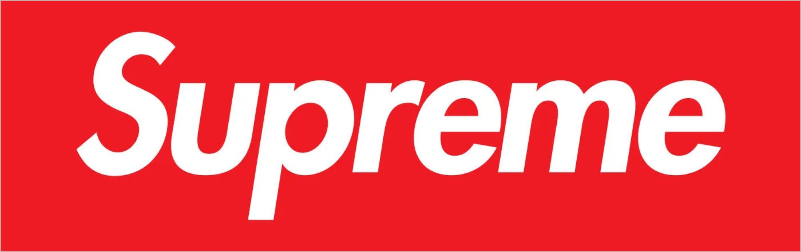
What I noticed
I looked at Supreme to understand how scarcity can create desire and increase perceived value. The harder something is to access, the more people want it.
What I took from it
I brought this into Nazar by treating human attention as limited and valuable, using exclusivity, demand and the desire to be chosen as part of the brand's psychology.
Choosing the name
Why Nazar It captured the duality I wanted; the desire to be noticed and the discomfort of being watched.
Choosing the tagline
Why this one It makes attention feel scarce, personal and exclusive, reinforcing Nazar's idea that genuine human attention is something valuable that can be deliberately reserved.
Mood board
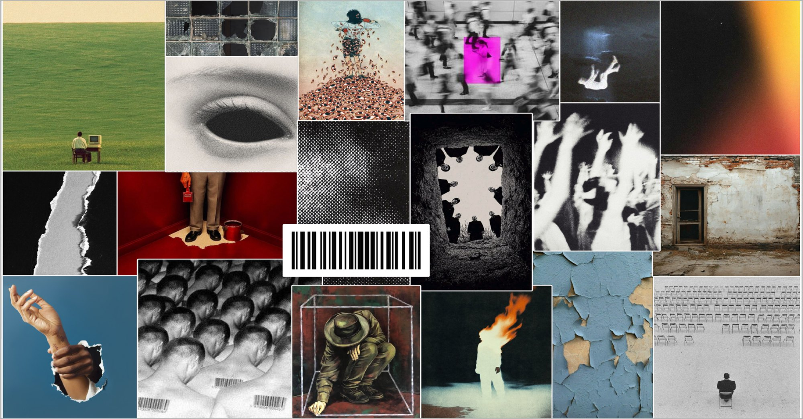
What this told me The brand needed to feel observed, desired and slightly uncomfortable, using the gaze, isolation, repetition and contrast to explore the psychology of attention.
Exploring the mark
Six directions, each testing a different way to put the idea of a gaze into the name itself.


The shortlist
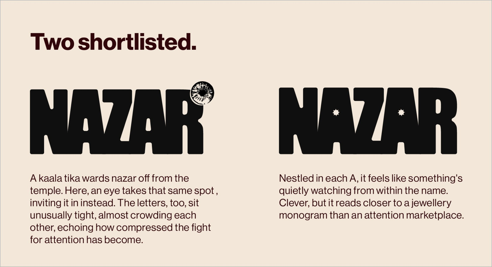
How I chose I shortlisted the logos based on how well they communicated gaze, attention and intensity, while still feeling distinct, memorable and adaptable as an app identity.
The final mark
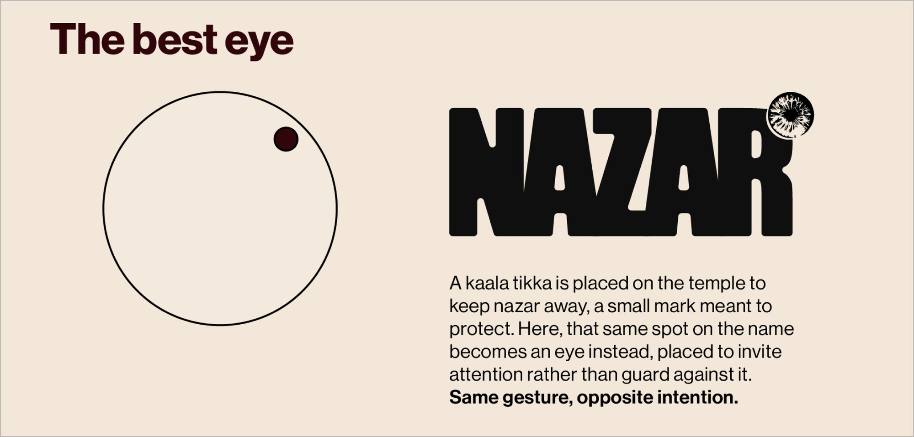
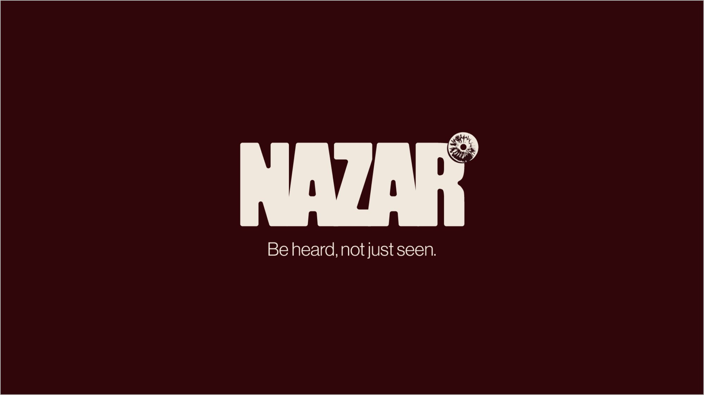
Colour and typography
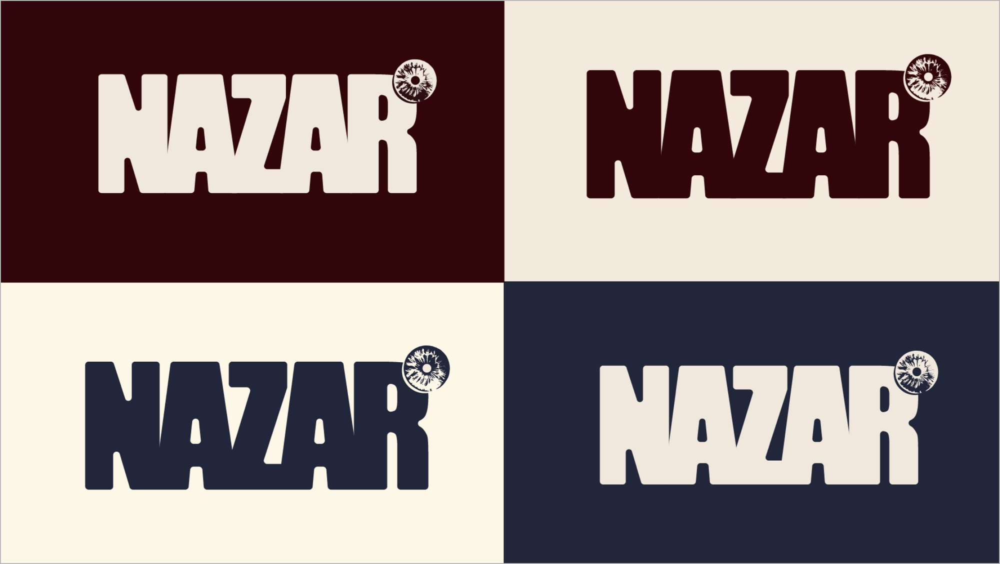
Typography
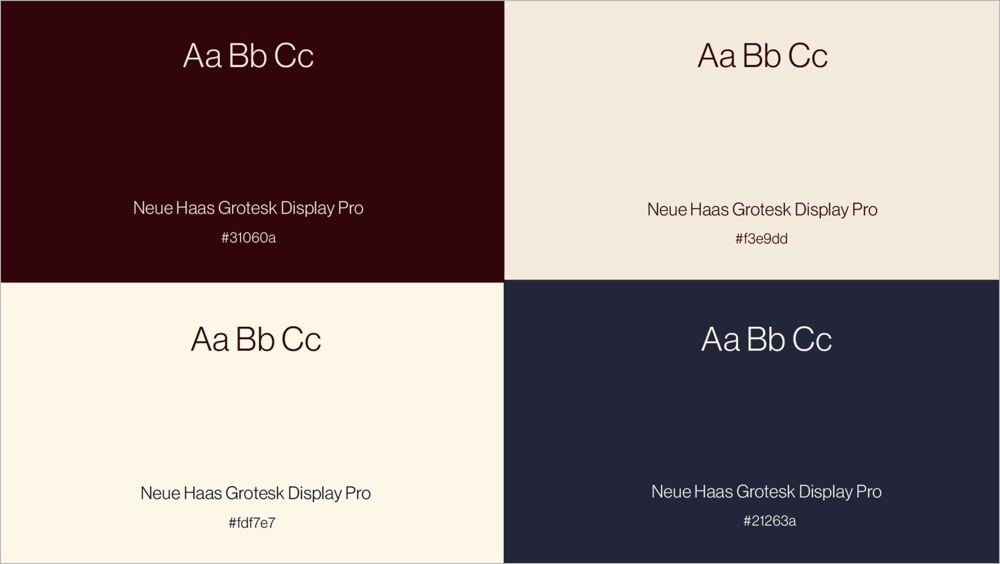
Logo lockups
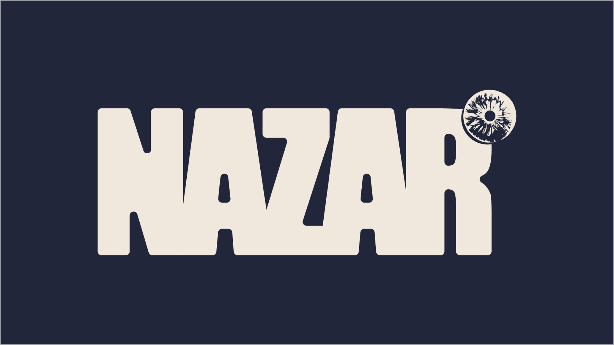
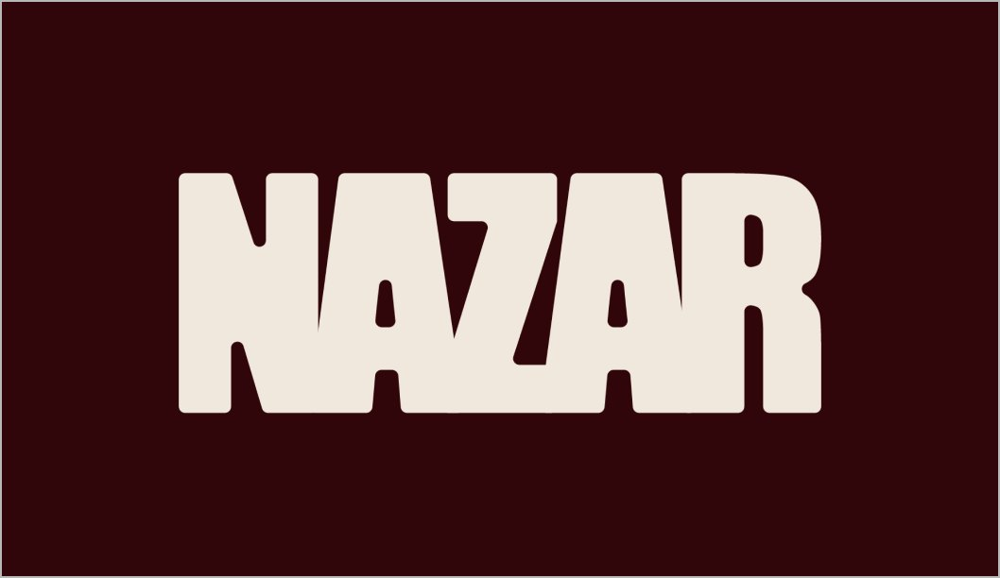
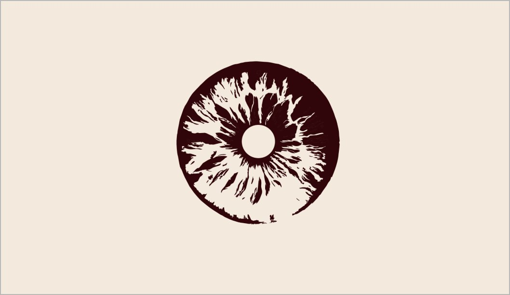
The brand in use
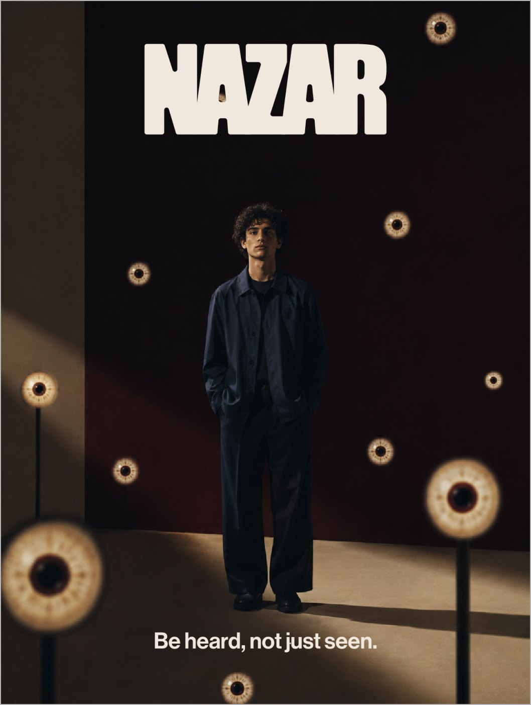
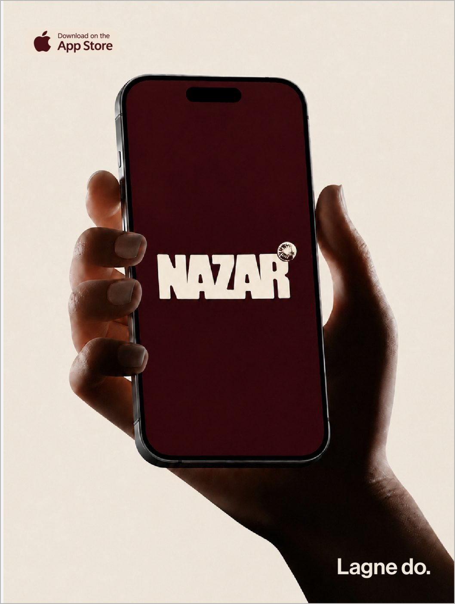
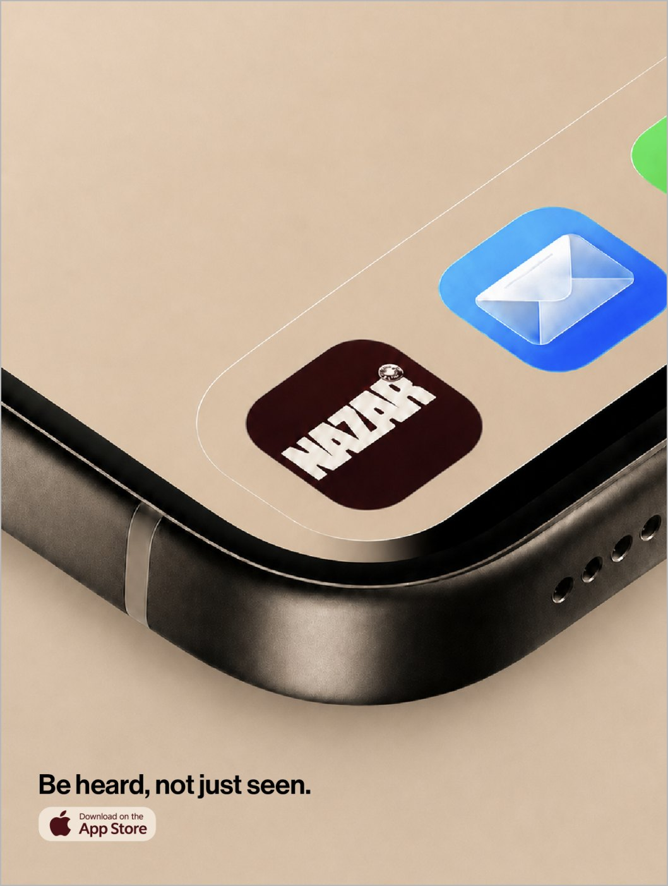
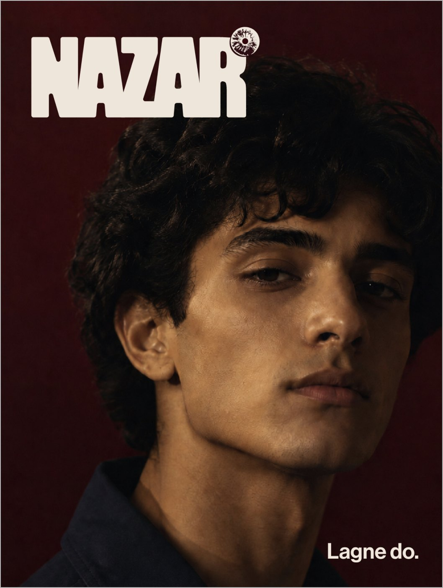
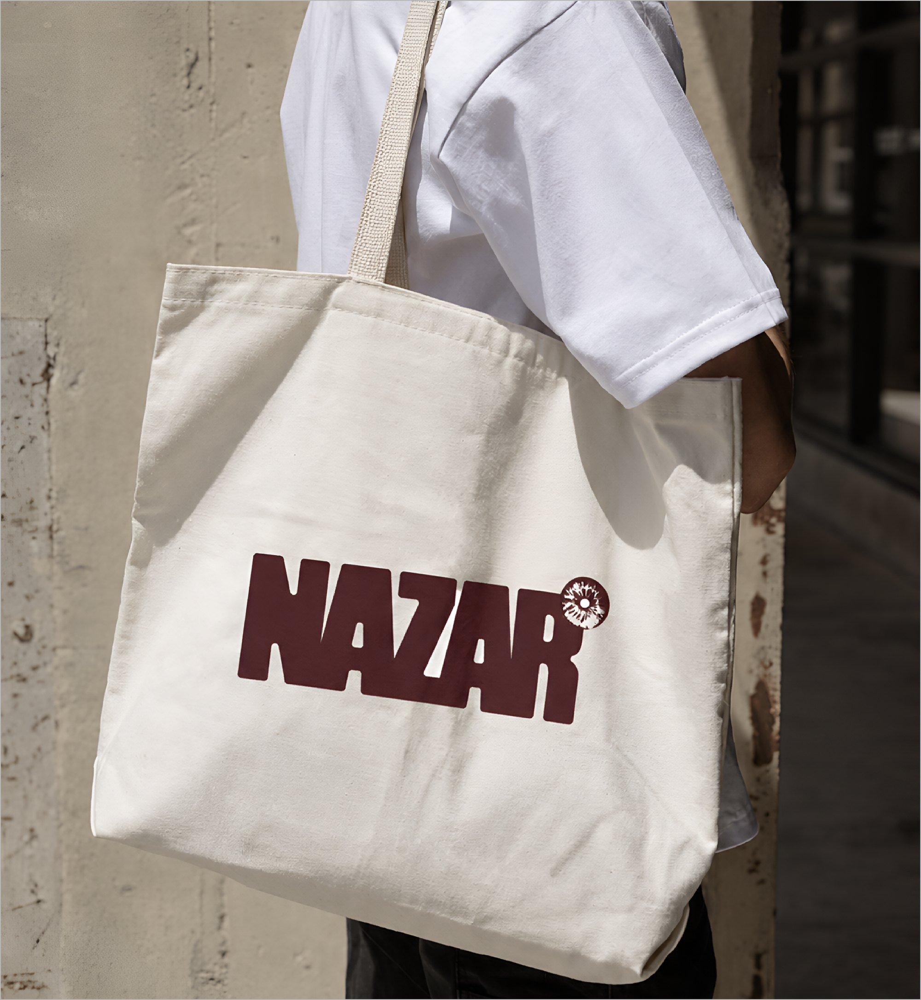